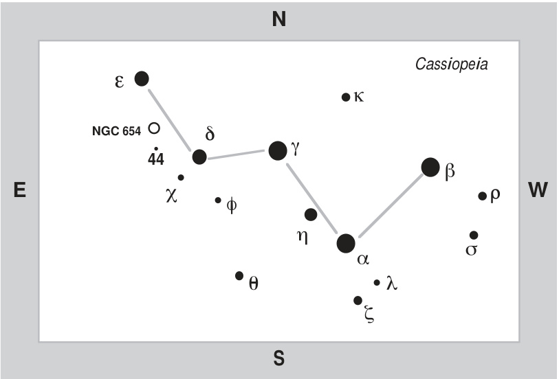
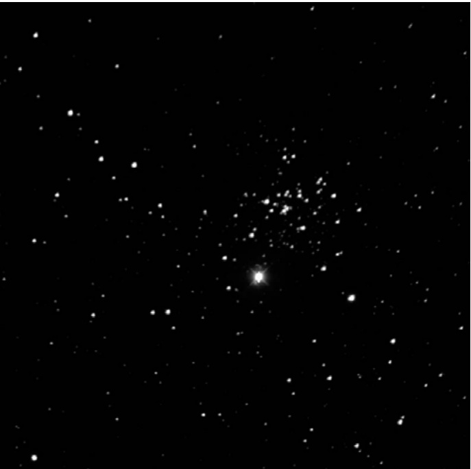

模糊蝴蝶星团 · Fuzzy Butterfly (NGC 654)

| 参数 Parameters | 数值 Value |
|---|---|
| 类型 Type | 疏散星团 Open Cluster |
| 星座 Constellation | 仙后座 Cassiopeia |
| 赤经 Right Ascension | $01^{\mathrm{h}}44.0^{\mathrm{m}}$ |
| 赤纬 Declination | $+61^{\circ}53^{\prime}$ |
| 星等 Magnitude | 6.5 |
| 表面亮度 Surface Brightness | 10.4 (评级 Rating: 4) |
| 角直径 Angular Diameter | $6.0^{\prime}$ |
| 距离 Distance | 约7,800光年 ~7,800 l.y. |
| 发现者 Discoverer | 威廉·赫歇尔 (1787) William Herschel, 1787 |
| 年龄 Age | 约1,400万年 ~14 million years |
| 成员星数 Number of Members | 约80颗 ~80 stars |
历史发现 · Historical Discovery
w. Herschel: [Observed November 3, 1787] A small cluster of pretty [bright] stars, considerably rich.
w. 赫歇尔：[1787年11月3日观测] 一个由相当多明亮恒星组成的美丽小星团，密集程度较高。（H VII-46）
William Herschel first swept this celestial gem into his telescope on that crisp November night in 1787. The legendary astronomer, who would later discover infrared radiation and detail the structure of the Milky Way, could not have imagined that this tiny knot of starlight would one day reveal secrets about the dusty foundations of our galaxy.
威廉·赫歇尔在1787年那个清冽的十一月夜晚，首次将这颗天穹宝石收入他的望远镜。这位日后将发现红外辐射并详述银河系结构的传奇天文学家，或许从未料想这簇微小的星光有朝一日会揭示我们银河系尘埃王国的秘密。
NGC: Cluster, irregular figure, rich, one magnitude 6.7 star, stars from 11 to 14 magnitude.
NGC：星团，不规则形态，密集，含一颗6.7等星，成员星亮度介于11至14等之间。
The New General Catalogue entry captures the essence of this overlooked wonder — a cluster with an irregular figure, rich in stars, with the prominent 6.7-magnitude yellow supergiant HD 10494 anchoring its heart.
新总星表条目捕捉到了这颗被忽视之宝的精髓——形态不规则、恒星密布，而明亮的7等黄色超巨星HD 10494则锚定于其核心。
仙后座的深空宝库 · Deep-Sky Treasury of Cassiopeia
Next to the Big Dipper, the W of Cassiopeia is arguably the most sought after star pattern in the northern heavens. They're both conspicuous and neither sets as seen from mid-northern latitudes.
在大熊座北斗七星之侧，仙后座的W形星群堪称北天最令人神往的星象图案。两者皆醒目异常，且在中北纬度地区皆永不沉没。
If the Big Dipper is the grand gateway to extragalactic wonders — a universe of spiral and elliptical galaxies beckoning beyond its bowl — then Cassiopeia is the portal to our own galactic stellar nurseries. Lying precisely on the Galactic equator, this constellation harbors a breathtaking abundance of open clusters, nebulae, and stellar nurseries.
如果说北斗七星是通往系外星系的宏伟门户——其斗形范围内无数旋涡星系与椭圆星系向你招手——那么仙后座便是通向我们银河系内部恒星托儿所的秘密通道。坐落于银道面之上，这个星座蕴藏着令人窒息的疏散星团、星云与恒星形成区宝库。
That's where you'll find five open clusters. They are, in order of brightness, NGC 654 (6.5), NGC 663 (7.1), M103 (7.4), NGC 659 (7.9), and Trumpler 1 (8.1). Note that our target, NGC 654, is the brightest of them all.
那里可以找到五个疏散星团。按亮度排序依次为NGC 654（6.5等）、NGC 663（7.1等）、M103（7.4等）、NGC 659（7.9等）及Trumpler 1（8.1等）。值得注意的是我们的观测目标NGC 654是其中最亮的，却极易被忽视——
Paradoxically, the brightest cluster hides most effectively. NGC 654 lurks just 40 arcminutes northwest of its neighbor NGC 663, obscured in the brilliant glare of its own yellow supergiant member — a stellar beacon that initially overwhelms the delicate cluster structure surrounding it. The 7th-magnitude star HD 10494 shines with such rich golden warmth that it demands attention, almost cruelly stealing focus from the 80 fainter stellar companions that form this young cosmic association.
极具讽刺的是，最亮的星团却隐藏得最为巧妙。NGC 654潜伏在邻居NGC 663西北偏北约40角分处，藏身于自身黄色超巨星成员的光芒之中——这颗恒星发出的炽热金色光辉如此夺目，以至于它近乎残忍地攫取了所有注意力，使周围80颗较暗的年轻成员星相形见绌。
尘埃中的蝴蝶 · A Butterfly in the Dust
The cluster's 80 measured members (7th-magnitude and fainter) appear in little clumps scattered across a mere 6' of sky, or 14 light-years. G. Lynga classified it as Trumpler II2r – a rich, detached cluster with little central concentration whose stars have a moderate range in brightness. It's a young cluster, with an age of about 14 million years, or about the same age as the Double Cluster in Perseus.
该星团已测量的80颗成员星（7等及更暗）分布在仅6角分的天区范围内（相当于14光年），形成若干小簇。G. Lynga将其归类为Trumpler II2r型——一个成员丰富、边界清晰但中心聚集度较低的星团，其成员星亮度差异适中。这个年轻星团年龄约1400万年，与英仙座双星团的年龄相仿。
At merely 14 million years old, NGC 654 is a cosmic infant — the stellar equivalent of a human child just learning to walk. To put this in perspective, the dinosaurs hadn't yet appeared when our Sun was this age. And yet this young cluster has already lived through more drama than most stars experience in their entire lifetimes.
仅1400万岁的NGC 654是一位宇宙婴儿——相当于蹒跚学步的人类幼童。为帮助理解：当我们的太阳处于这个年龄时，恐龙尚未出现。然而这个年轻的星团已经经历了比大多数恒星穷其一生更为剧烈的戏剧性事件。

穿越尘埃的星光 · Starlight Through the Veil
Astronomers have taken keen interest in NGC 654 because it displays nonuniform extinction across its face, with stars reddened by about 1 magnitude on average.
天文学家对NGC 654表现出浓厚兴趣，因其表面存在不均匀消光现象，恒星平均红化约1个星等。
The phenomenon of interstellar extinction — where cosmic dust grains scatter and absorb starlight — transforms this cluster into a natural laboratory for studying the dusty architecture of our galaxy. In 1975, W. B. Samson proposed that a shell of primordial dust, the swaddling clothes of star formation, envelops the cluster.
星际消光现象——宇宙尘埃颗粒对星光的散射与吸收——使这个星团成为研究银河系尘埃结构的天然实验室。1975年，W·B·萨姆森提出，这个星团被一层原初
🔒 受限于篇幅，本文仅展示部分样章。O'Meara 先生完整的观测手记、实测数据及未公开的独家配图，请参阅原著双语典藏版。
👉 立即在闲鱼获取《DEEP-SKY COMPANIONS》中英双语高清典藏版